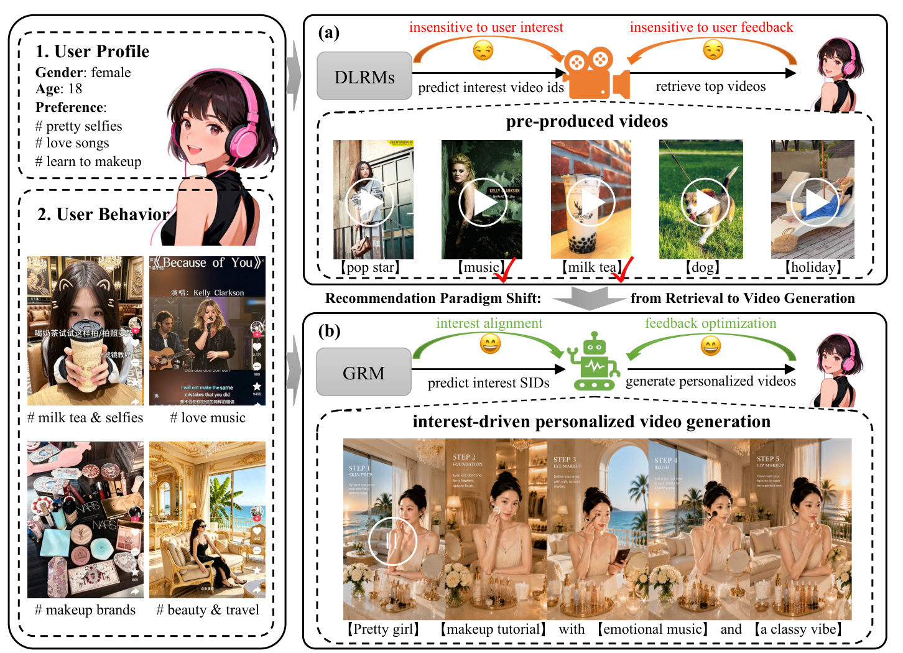
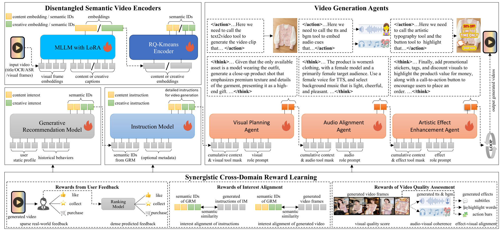
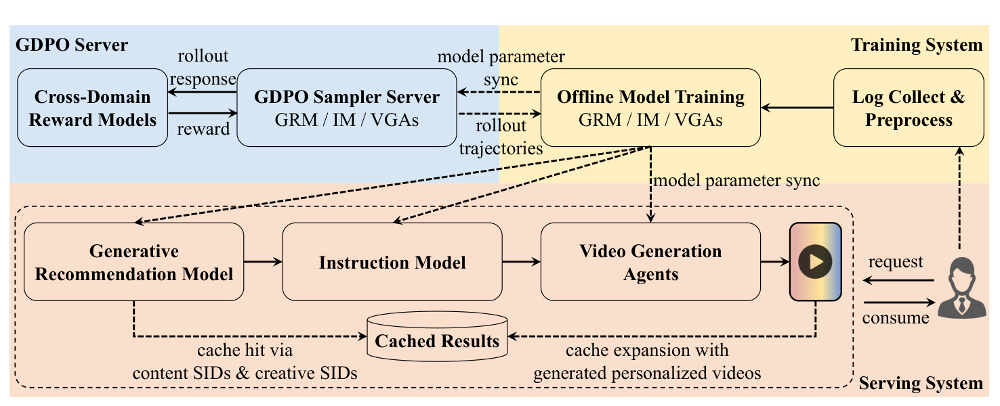
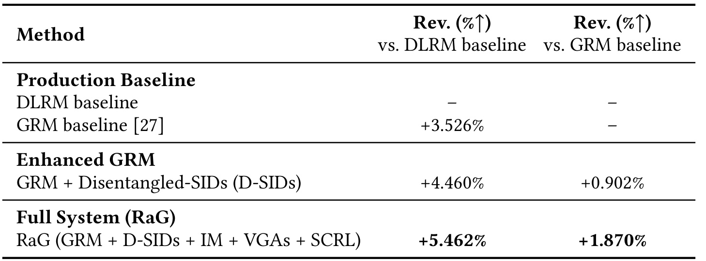
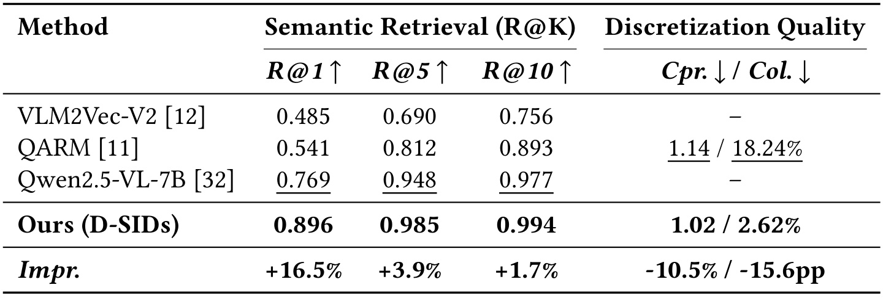
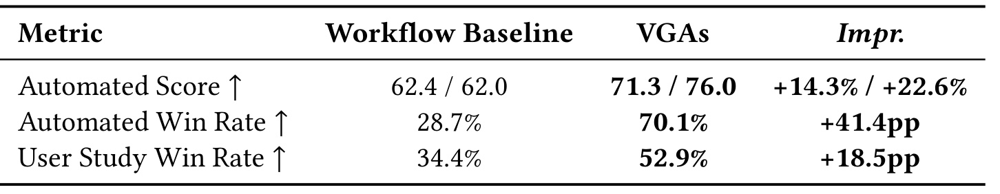
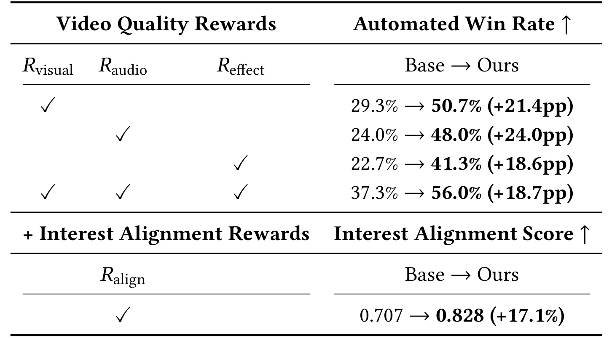
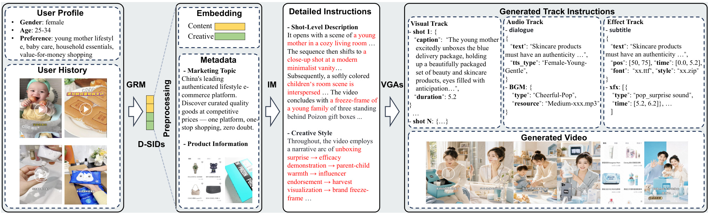
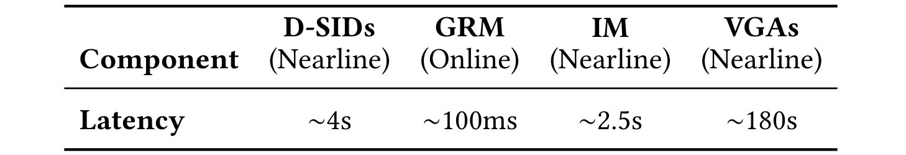

这篇论文来自 Kuaishou Technology 与 Beihang University 多作者团队，讨论的是一个很激进但又非常工程化的问题：推荐系统能不能不再只从库存视频里挑内容，而是根据用户兴趣直接生成个性化短视频。论文入口为 arXiv:2606.25496，摘要页给出独立项目页；本笔记只基于论文 PDF、摘要页事实包和论文内实验表述，不把项目页资源完整性当作已审计结论。
传统短视频推荐把用户兴趣匹配到一个预先生产好的固定视频池，即使用生成式推荐模型预测语义 ID，本质上仍是在既有内容中检索；当用户兴趣细粒度、动态、长尾，或者内容池里根本没有合适素材时，系统无法把预测到的兴趣直接变成新的个性化视频，也很难把真实反馈闭环回生成过程。
1. 背景和问题
短视频推荐过去十多年主要围绕“内容池已经存在”这个前提展开：内容由创作者、广告主或平台生产，推荐模型负责召回、粗排、精排和重排。DLRM、DIN 这类深度推荐模型可以提高匹配精度，但它们仍然是在已有候选集合里找最合适的 item。近两年生成式推荐模型开始把 item 或 Semantic ID 当作 token 预测，例如用自回归模型输出用户下一步可能感兴趣的语义 ID，再按这些 ID 去检索视频。论文认为这一步虽然把推荐问题写成了生成问题，但系统行为仍然是“预测再检索”，没有真正改变供给侧约束。
这篇论文的出发点是，短视频平台的兴趣分布比传统商品或网页推荐更动态：用户可能突然关注一个很窄的视觉风格、一种音乐氛围、某类妆容教程、某种广告话术，固定内容池未必刚好覆盖这些组合。即便已有视频里有相近内容，也可能在画面风格、节奏、背景音乐、字幕、互动按钮、产品卖点上与当前用户的偏好不完全一致。于是推荐模型做得再强，也只能在“不够合适”的库存里排序。论文把这个问题称为从 retrieval-based recommendation 到 generation-driven personalization 的范式缺口。

Figure 1 把这个缺口画得很直观。左侧用户的画像和行为里同时包含“pretty selfies”“love songs”“learn to makeup”“milk tea & selfies”等偏好，但 DLRM 路线只能预测若干兴趣 video id，再去预制视频池中取 top videos。图里用“pop star”“music”“milk tea”“dog”“holiday”等候选表示内容池可能只覆盖到粗粒度主题，推荐模型对用户兴趣和用户反馈都比较迟钝。右侧 RaG 路线改成让 GRM 预测 interest SIDs，再生成“pretty girl + makeup tutorial + emotional music + classy vibe”这样的个性化视频。这里最重要的变化不是“用了生成模型”，而是推荐系统的输出对象从“已有 item 的索引”变成了“可被内容生成模块消费的兴趣表示”。用户反馈也不再只影响下一轮排序，而是能反向约束生成质量、兴趣对齐和内容供给扩展。
论文把困难拆成两个。第一，推荐和视频生成的表示空间不同：推荐系统处理用户画像、行为序列、item 特征和离散 ID，目标是预测兴趣；视频生成模型处理文本、图像、音频、运动和风格，目标是生成连贯高质量内容。两者如果没有共享接口，推荐模型预测出的兴趣很难被生成模型稳定地解释。第二，工业规模的视频生成成本很高。前沿视频模型往往依赖人工 prompt、多阶段后处理和专业工具，一条令人满意的视频就可能需要高延迟和高算力；如果把这个过程直接放到几亿日活用户的推荐链路里，实时服务不可行。
因此 RaG 的目标不是单纯提出一个“用户画像到视频 prompt”的应用 demo，而是要把推荐、生成、反馈和服务拆成可训练、可缓存、可部署的链路。它必须同时满足四个条件：用户兴趣需要被细粒度表示；这种表示要能控制视频内容和创意风格；生成过程要能在视觉、音频、特效之间保持一致；线上反馈要能进入训练闭环，并且系统延迟不能破坏推荐服务。论文的贡献基本都围绕这四个条件展开。换句话说，RaG 不是把 AIGC 当作推荐系统外围的素材生产工具，而是把“推荐模型预测出的兴趣、生成模型可执行的条件、真实用户反馈”放进同一个可优化系统里；这也解释了为什么论文同时重视语义 ID、代理式生成、奖励约束和缓存服务，而不是只展示一个个性化视频 demo。
2. 方法
2.1 从检索到生成：用 D-SIDs 把兴趣空间和内容生产空间接起来
RaG 的核心中间层是 Disentangled Semantic IDs，简称 D-SIDs。它先把视频拆成内容语义和创意风格两类 token，再让推荐侧预测这些 token，并把预测结果交给生成侧执行。论文先把一个视频编码为两组离散语义 ID：一组表示内容语义，例如人物、主题、场景；另一组表示创意属性，例如风格、节奏、氛围。这样做的工程意义是，推荐侧可以继续使用适合大规模预测的离散 token，生成侧又能从这些 token 里恢复出可控的内容和创意条件。D-SIDs 因而成为推荐和生成之间的共享接口，而不是普通 item id。

Figure 2 是整篇论文最重要的结构图。左上角的 Disentangled Semantic Video Encoders 把输入视频的标题、OCR、ASR 和视觉帧送入 MLLM with LoRA，再通过 RQ-Kmeans Encoder 量化成 content semantic IDs 与 creative semantic IDs。左下角的 GRM 根据用户静态画像和历史行为预测 content interest 与 creative interest。中间的 Instruction Model 把这些语义 ID 和可选 metadata 翻译成详细生成指令。右侧三个 Video Generation Agents 分别负责视觉规划、音频对齐和艺术效果增强。底部的 Synergistic Cross-Domain Reward Learning 则把用户真实反馈、兴趣对齐和视频质量评估连成一个训练闭环。图里最值得注意的是：RaG 没有把“推荐模型”和“视频模型”粗暴串联，而是用 D-SIDs、指令模型和奖励学习把它们拆成多个可审计的接口。
论文把 D-SIDs 与 GRM 预测写成两个连续定义：
符号解释：\(v\) 是输入视频，\(E\) 是视频编码器，\(s^l_{\mathrm{content}}\) 与 \(s^l_{\mathrm{creative}}\) 分别是第 \(l\) 层内容语义码和创意风格语义码，\(c_{\mathrm{user}}\) 是用户画像与历史行为上下文，\(s_t\) 是 GRM 自回归预测的第 \(t\) 个 token。第一条公式说明视频不再只有单一 item id，而是被拆成内容与创意两条层级 token；第二条公式说明 GRM 仍是推荐模型，但它预测的结果已经是可供生成系统消费的兴趣表示。
端到端关系可以写成：
符号解释：\(G\) 是后续生成过程，\(\hat{v}\) 是生成视频。这条公式把论文题目里的 Recommendation as Generation 落到操作层面：推荐模型不再只输出已有视频的索引，而是输出一个能被生成模型解码的新内容条件。为了让这个条件可控，编码器还会用内容提示和创意提示生成两类描述，并训练表示既保持相似视频的一致性，又减少内容与创意之间的泄漏。
表示学习与量化的关键目标可以概括为：
符号解释：\(L_{\mathrm{content}}\) 和 \(L_{\mathrm{creative}}\) 是两个因子的对比学习目标，\(z_{\mathrm{content}}\) 与 \(z_{\mathrm{creative}}\) 是内容和创意表示，\(\gamma_1\) 与 \(\gamma_2\) 是权重，\(c_m^l(\cdot)\) 是第 \(m\) 个因子、第 \(l\) 层 codebook 的查表函数，\(s_m^l\) 是对应离散码，\(e_m\) 是量化近似。第一条公式把内容学习、创意学习和正交约束合在一起；第二条公式说明 RQ-KMeans 如何用多层 codebook 近似连续表示。论文每个因子独立维护 codebook，因此内容 token 与创意 token 不必竞争同一个离散空间。
2.2 Instruction Model：把离散兴趣 token 翻译成可执行的分镜脚本
D-SIDs 本身是离散码，视频生成 agent 不能直接拿它们做分镜、台词、转场和特效。Instruction Model 的作用就是把这些离散兴趣 token 翻译成自然语言的 shot-level production instructions。论文强调，这不是普通 caption generation，因为广告短视频需要的是可执行的制作脚本：场景构图、镜头运动、时间节奏、风格、产品信息和营销主题都要明确。由于没有现成的 shot-level 视频指令数据集，作者先用 Gemini2.5 Pro 作为 teacher，为每条视频蒸馏目标脚本；训练时，Qwen3-8B 接收 D-SIDs 反量化后的 embedding 和可选 metadata，输出分镜脚本。
符号解释：\(h_{D\text{-}SIDs}\) 是 D-SIDs 反量化后再映射到语言模型空间的前缀表示，\(Q_{\mathrm{meta}}\) 是可选产品元信息的文本 embedding，\(\hat{D}_{\mathrm{inst}}\) 是模型生成的指令序列，\(y_t\) 是 teacher 脚本第 \(t\) 个 token。这个目标让 Instruction Model 学会“把兴趣码翻译成生产脚本”，而不是直接生成最终视频。论文三阶段训练也服务于这个目的：先只训练 projector 做空间对齐，再联合微调 LLM，最后用奖励优化增强可控性和兴趣一致性。
2.3 Video Generation Agents：三个角色代理顺序生成视觉、音频和效果
Instruction Model 输出的是脚本，但一条广告视频不是单一文本到视频模型就能解决的任务。它需要先决定画面叙事，再决定 TTS、BGM 和节奏，最后加字幕、贴纸、转场、行动按钮等后期元素。论文因此把 Video Generation Agents 设计成多角色、顺序决策过程，而不是一个 monolithic generator。这里的风险也很明确：如果视觉、音频和效果各自独立生成，视频可能局部好看但整体不一致；如果所有步骤都交给一个大模型一次性完成，又会失去可控性和工具化生产能力。
符号解释：\(S_t\) 是第 \(t\) 步状态，\(a_t\) 是当前子代理选择的动作，\(P\) 是确定性状态转移算子，\(D_{\mathrm{tool}}\) 是可用工具描述，\(O_{<t}\) 是前序代理输出累积，\(PROMPT_{\mathrm{role}}\) 激活当前角色。三个代理依次是 Visual Planning Agent、Audio Alignment Agent 和 Artistic Effect Enhancement Agent，分别负责 storyboard、TTS/BGM 和字幕/贴纸/转场/CTA。它们共享一个 Qwen2.5-32B backbone，差异来自 role prompt、tool mask 和累积上下文。因为状态是 append-only，前序 token 可以留在 KV cache 里，后续代理只增量编码自己的角色提示，从而降低推理开销。VGAs 还设置最多两轮 bounded reflection loop，在质量提升和延迟之间做硬约束。
2.4 SCRL 与工业部署：把用户反馈作为主目标，把质量和兴趣对齐作为约束
RaG 的奖励学习不是把所有 reward 简单相加。论文把 reward 分成三类：视频质量、兴趣对齐和用户反馈。视频质量包括视觉质量、音画一致性、效果与画面一致性；兴趣对齐包括生成指令与 GRM D-SIDs 的一致性，以及生成视频帧与 GRM D-SIDs 的语义相似；用户反馈包括点击、like、collect、purchase 等真实交互，以及排序模型给出的 dense predicted feedback。核心设计是把 user feedback 作为主目标，把 alignment 和 quality 当作不能低于阈值的约束。
符号解释：\(y_i\) 是采样候选，\(R_{\mathrm{feedback}}\) 是主目标用户反馈，\(R_c\) 是约束侧 reward，\(a\) 代表 interest alignment，\(q\) 代表 video quality，\(\tau_c\) 是约束阈值，\(\lambda_c(t)\) 是随时间更新的拉格朗日乘子。如果质量或对齐不足，ReLU 惩罚项会直接扣掉候选奖励；这比简单加权更适合异构目标，因为它表达的是“商业反馈很重要，但不能以牺牲质量和兴趣一致性为代价”。
GDPO 再把候选集合内的 reward 做组内标准化，并以相对参考策略的方式更新当前策略：
符号解释：\(Y\) 是同一上下文下采样出的候选集合，\(\mu(Y)\) 和 \(\sigma(Y)\) 是组内 reward 均值和标准差，\(\epsilon\) 防止除零，\(\pi_\theta\) 是当前策略，\(\pi_{\mathrm{ref}}\) 是冻结的 SFT 参考策略。优势 \(A_i\) 越高，模型越倾向于提高该候选相对参考策略的概率；但前一个公式里的约束惩罚会阻止模型只追逐点击或转化而牺牲视频可看性与兴趣一致性。

Figure 3 把训练和服务拆成两个相互连接的系统。上方是训练系统：日志收集与预处理进入 Offline Model Training，GRM、IM、VGAs 和 Cross-Domain Reward Models 通过 GDPO Sampler Server 与 GDPO Server 形成 rollout、reward、response 和参数同步。下方是 serving system：GRM、Instruction Model、Video Generation Agents 生成个性化视频，结果进入 Cached Results，用户请求通过 content SIDs 与 creative SIDs 命中缓存，或者触发缓存扩展。图中最值得关注的是 decoupled deployment：GRM 负责低延迟在线兴趣预测，IM 与 VGAs 负责高成本近线生成，缓存把二者连接起来。这个结构承认视频生成还不能直接实时化，但仍让生成内容逐步扩展推荐候选空间。
部署部分还定义了两种服务情况：content-SIDs 命中时，如果 creative-SIDs 也覆盖，就直接返回已有生成视频；如果创意层缺失，先服务内容一致的缓存视频，同时异步调度缺失创意变体。content-SIDs 未命中时，系统先用最近邻 SIDs 对应视频保证即时消费，再把未覆盖 SIDs 放入未来生成队列。这个策略是整篇论文最工程化的地方：RaG 并没有假设视频生成已经能承受实时推荐 QPS，而是通过缓存与近线扩张，把生成能力变成供给侧资产。
3. 实验结果
3.1 线上 A/B：RaG 的增量必须越过强 GRM baseline
论文在快手真实广告平台上做线上 A/B，平台规模为超过 4 亿日活用户，场景是 revenue-critical advertising。这里最重要的 baseline 不是传统 DLRM，而是已经很强的 GRM baseline。因为如果 RaG 只比 DLRM 好，可能只是生成式推荐本身带来的收益；只有超过 GRM，才能说明“从生成 ID 检索”到“按 ID 生成内容”的供给侧闭环确实贡献了额外价值。

Table 1 显示，GRM baseline 相对 DLRM baseline 带来 +3.526% ad revenue；加入 D-SIDs 的 enhanced GRM 达到 +4.460%，相对 GRM baseline 又有 +0.902%；完整 RaG 包含 GRM、D-SIDs、IM、VGAs 和 SCRL 后，相对 DLRM baseline 达到 +5.462%，相对 GRM baseline 达到 +1.870%。这个表的证据链比较清楚：第一阶段收益来自用 GRM 替换 DLRM；第二阶段收益来自 D-SIDs 让兴趣表示更结构化；第三阶段的额外收益才来自 personalized video generation 及其奖励闭环。需要克制的是，论文披露的是广告收入相对提升，并没有公开更多流量切分、置信区间、实验周期或人群分层，因此它能证明大规模线上有效，但不能让读者独立复现实验。
3.2 D-SIDs：表示质量与离散化质量同时被验证
D-SIDs 是 RaG 的接口层，如果它只是在公式里漂亮，后续 IM 和 VGAs 很可能拿到的是噪声 token。论文分别验证 embedding-based semantic retrieval quality 和 SID discretization quality。前者看 D-SIDs 相关表征是否能找回语义相近对象，后者看量化后的压缩率和 collision rate 是否可控。

Table 2 中，Ours (D-SIDs) 的 R@1、R@5、R@10 分别为 0.896、0.985、0.994。与最强对照 Qwen2.5-VL-7B 相比，R@1 提升 +16.5%，R@5 提升 +3.9%，R@10 提升 +1.7%。更关键的是离散化质量：QARM 的 compression rate / collision rate 为 1.14 / 18.24%，D-SIDs 为 1.02 / 2.62%，对应压缩误差降低 10.5%，碰撞率降低 15.6 个百分点。这个结果支撑了论文中“内容与创意解耦有助于减少 token 干扰”的论点。R@10 已接近饱和，所以 R@1 的提升更有解释价值：它说明模型在最精确的单个候选上更能分辨内容与创意语义。
Instruction Model 的配置实验没有单独成表，但论文给出了关键数字：8B 模型、100K 样本时解码 fidelity 为 0.7760；8B 模型、1M 样本时提升到 0.8096；32B 模型、1M 样本时进一步到 0.8212。作者最终采用 8B + 1M 作为默认配置，是一个成本与效果的折中。这个选择很符合工业部署：32B 的少量增益可能不值得在近线生成链路里长期承担更高训练和推理成本。
3.3 VGAs 与 SCRL：质量提升来自结构化代理和约束式奖励
VGAs 的对照是一个 conventional workflow baseline：指令生成、rough-cut、fine-cut 按固定顺序执行。论文认为这种固定流程难以适应多样化的用户需求，所以用多代理结构替代。实验指标覆盖 automated score、automated win rate 和 user study win rate。

Table 3 显示，VGAs 的 automated score 从 workflow baseline 的 62.4 / 62.0 提升到 71.3 / 76.0，平均和中位数分别提升 +14.3% / +22.6%；automated win rate 从 28.7% 到 70.1%，提升 +41.4 个百分点；user study win rate 从 34.4% 到 52.9%，提升 +18.5 个百分点。这个表说明代理结构不仅在自动评估上好看，在人工偏好判断上也超过了固定流程。不过 user study 的规模是 20 名标注者、总计 1000 次 pairwise 判断，已经比普通 demo 强，但离充分覆盖广告素材、人群和行业类目的泛化评估仍有距离。
奖励消融进一步回答“为什么 SCRL 不只是加几个 reward 名称”。论文始终保留 user feedback 作为主目标，主要消融质量约束和兴趣对齐约束。视频质量 reward 分为 visual、audio、effect 三类，对应画面质量、音画一致性和效果视觉一致性；interest alignment reward 则关注生成内容是否贴合 GRM 预测的兴趣。

Table 4 的第一部分显示，单独加入 \(R_{\mathrm{visual}}\)，Automated Win Rate 从 29.3% 到 50.7%；单独加入 \(R_{\mathrm{audio}}\)，从 24.0% 到 48.0%；单独加入 \(R_{\mathrm{effect}}\)，从 22.7% 到 41.3%；三者一起为 37.3% 到 56.0%。这些数字说明三个质量维度都有效，但联合结果并不是简单超过所有单项增益的总和，可能存在 reward 间约束和测试集口径差异。第二部分显示加入 \(R_{\mathrm{align}}\) 后，Interest Alignment Score 从 0.707 到 0.828，提升 +17.1%。这支撑了论文把质量和对齐作为约束侧 reward 的设计：质量保证视频可看，对齐保证视频仍然服务于用户兴趣，用户反馈则决定最终商业目标。
3.4 定性案例：从用户画像到广告视频生产指令
论文给的 qualitative example 是广告场景。用户画像为女性、25-34 岁，偏好 young mother lifestyle、baby care、household essentials、value-for-money shopping。系统还接入营销话题和产品信息，例如电商平台、正品认证、价格竞争力等。GRM 先推断 D-SIDs，IM 再把 D-SIDs 和 metadata 变成 shot-level description 与 creative style，VGAs 继续拆成 Visual Track、Audio Track、Effect Track，最后生成视频。

Figure 4 展示了 RaG 的实际输出形态。左侧用户画像和历史行为不是直接拼成 prompt，而是先经过 GRM 与 D-SIDs；中间的 metadata 和 embedding 区域说明广告产品信息也会进入条件；Detailed Instructions 区域给出“young mother in a cozy living room”“modern minimalist vanity”等镜头描述，以及 unboxing surprise、efficacy demonstration、parent-child warmth 等创意节奏；右侧把视觉、音频、效果三条轨道拆开，包含 caption、duration、TTS type、BGM resource、subtitle position、effect timing 等可执行字段。这个案例说明 RaG 的生成对象并不是一段抽象文案，而是一组可交给视频生产工具链执行的结构化轨道。对推荐系统读者来说，这张图也暴露了一个难点：一旦生成内容进入广告链路，质量风险不只来自兴趣不匹配，还来自商品合规、话术准确性、视觉误导和素材版权等更复杂的生产约束。
3.5 效率与评估口径：近线生成是当前边界
论文在 Appendix A 给出模块延迟，这对判断可落地性很关键。RaG 不是把所有模块都塞进实时请求链路，而是明确区分 online 与 nearline。GRM 在线服务，IM、D-SIDs 和 VGAs 主要在近线执行。

Table 5 显示，D-SIDs nearline 约 4 秒，GRM online 约 100 ms，IM nearline 约 2.5 秒，VGAs nearline 约 180 秒。这个延迟分布解释了为什么 Figure 3 里必须有缓存扩展和 nearest-neighbor fallback：当前真正昂贵的是视频生成代理，不可能在每个推荐请求现场生成。论文的部署逻辑是让 GRM 低延迟预测用户兴趣，用近线生成持续扩充个性化视频空间，再通过 cache hit 和异步补齐降低实时压力。因此 RaG 的价值更像“生成驱动的供给扩展与个性化素材生产”，而不是“每次刷 feed 即时生成视频”。
评估口径上，Appendix B 说明作者用外部 judge 和人工标注做质量评价，尽量与训练 reward 解耦。Interest Alignment Score 由 GPT-5.1、Gemini-2.5 Pro 和 Claude-4.5 Sonnet 三个 multimodal evaluator 对 1000 条多类视频实例打分，维度包括 content fidelity、attribute accuracy、intent/theme alignment、completeness 和 narrative coherence。Automated Quality Evaluation 也使用三 judge ensemble，评价 instruction attractiveness、BGM compatibility、SFX/sticker design、instruction-visual alignment。Human Preference Assessment 则由 20 名不同背景标注者做 pairwise Good-Same-Bad。这个设计比单一自动评分稳健，但仍有两个注意点：第一，judge 模型本身和广告业务目标之间有 gap；第二，公开论文没有释放完整样本、标注协议细节和线上分层，因此评价可信度依赖作者披露。
4. 总结
4.1 我的判断
RaG 的真正价值在于把推荐系统的“供给侧闭环”推到前台。传统推荐优化主要在用户侧和排序侧发力：更懂用户、更会排序、更会探索。但内容池本身常常被视为外部给定。RaG 试图让推荐模型预测出的兴趣直接进入内容生产过程，并让真实反馈影响生成策略。这对广告推荐尤其有吸引力，因为广告素材可以被平台和商家较强控制，生成个性化素材比改造全站 UGC 生态更容易形成闭环。
从研究角度看，D-SIDs 是最值得继续读的部分。它同时承担检索、生成控制和奖励对齐的接口，成败取决于内容语义与创意语义能否真的解耦。Table 2 的碰撞率下降是强证据，但我还想看到更多跨类目、跨风格、跨广告主的分析，尤其是当内容与创意高度相关时，正交约束是否会丢失真实业务信号。
从工程角度看，论文最诚实的地方是承认 VGAs 仍是近线系统。约 180 秒的延迟意味着 RaG 目前更像大规模 personalized creative generation pipeline，而不是端到端实时生成推荐。它适合高价值广告、冷启动素材扩展、长尾兴趣补供给、营销活动批量变体生成；如果要进入普通 feed 的实时链路，还需要更强的蒸馏、缓存策略、生成安全审查和失败回退。
4.2 局限与后续跟进
第一，线上收益虽然亮眼，但公开表格主要报告 ad revenue 相对提升，缺少实验周期、显著性、人群分层、行业类目、素材审核通过率、投诉率等信息。对工业论文可以理解，但读者不能把 +1.870% 直接外推到其他平台。
第二，生成内容的安全和合规问题在论文中不是主线。广告视频可能涉及商品功效、人物肖像、音乐版权、字幕误导、价格信息和平台合规。如果 reward 主要围绕用户反馈、兴趣对齐和视频质量，仍需要额外的 policy、审核和风险控制链路。
第三，D-SIDs 和 VGAs 的训练依赖大量内部数据、CapModel、Gemini 蒸馏、Qwen 系列模型、内部工具和真实广告反馈。论文方法有可迁移思想，但完整复现门槛很高。外部研究者更现实的复现路径是先做小规模“推荐兴趣 token 到素材 prompt / image / short video”的闭环，而不是复刻整套工业系统。
第四，奖励学习里把 user feedback 作为主目标是合理的商业选择，但它可能放大短期转化偏好。若没有长期用户体验、广告疲劳、内容多样性和品牌安全约束，生成系统可能学习到更刺激但不一定更健康的素材风格。论文中 SCRL 的约束形式可以扩展到这些目标，但公开实验没有覆盖。
后续我会优先跟进三件事：一是项目页或后续版本是否释放更多视频案例、评估样本和安全策略；二是 D-SIDs 是否能在非广告推荐、UGC 内容补全或创作者辅助生产中复用；三是 VGAs 的延迟能否通过小模型蒸馏、工具裁剪和缓存命中率提升降到更接近实时个性化生产。若这些问题有进一步证据，RaG 就不只是一次广告系统实验，而可能成为“推荐模型参与内容供给”的重要工程范式。